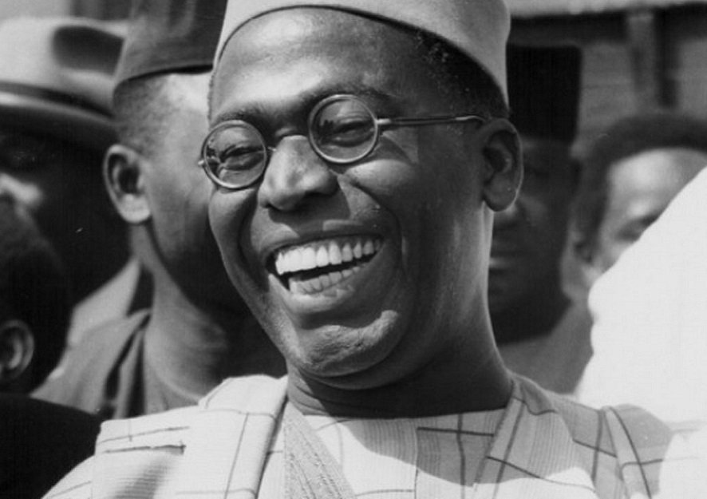

Chief Obafemi Awolowo
Here's a time line of Chief Awolowo's life:
- 1909: Born in Ilisan, Western Region, British Nigeria.
- 1920: His father died when he was about ten years old.
- 1927: Enrolled as an External Student at the University of London.
- 1937: Got married to Miss Hannah Idowu Dideolu Adelana.
- 1944: Went to the UK to study law at the University of London.
- 1946: Was called to the Bar by the Honorable Society of the Inner Temple.
- 1949: Founded the Nigerian Tribune newspaper. He also formed the group known as Egbe Omo Oduduwa.
- 1951: Founded the political party, Action Group, (AG), also called Egbe Afenifere.
- 1954: Became the first Premier of the Western Region.
- 1987: Died at the age of 87 in Ikenne, Ogun State.